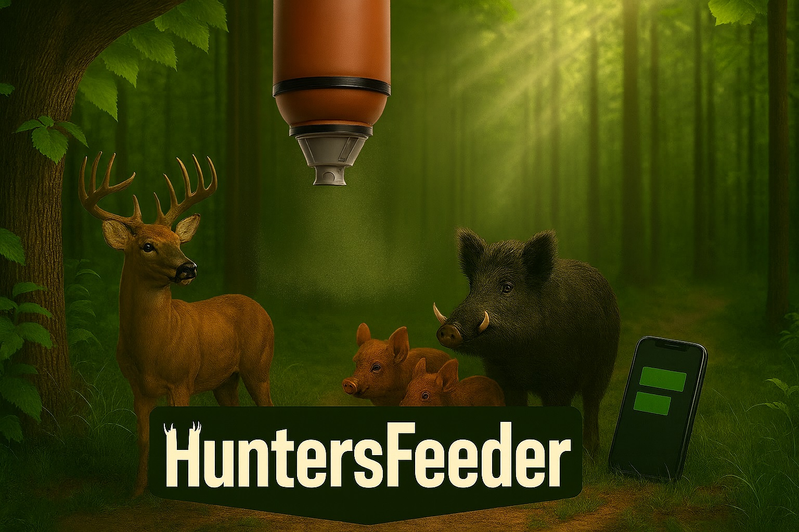
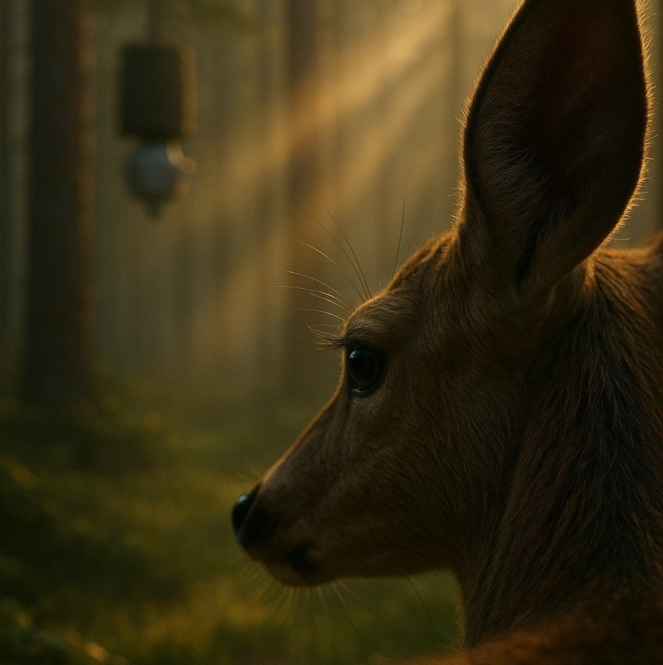
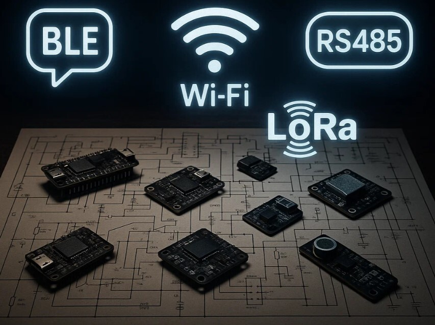
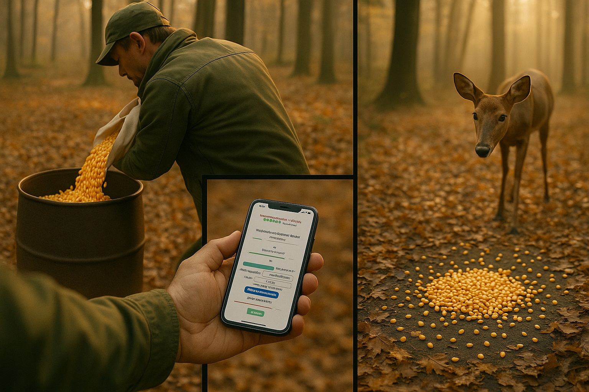
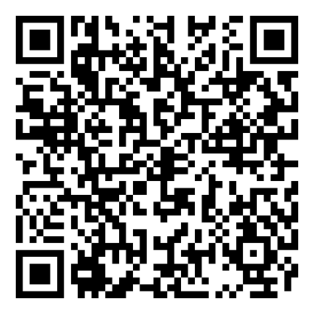

Preprosto in pametno upravljanje hranjenja divjadi – kjerkoli in kadarkoli.
Zanesljivo delovanje v vseh razmerah, z avtomatskim krmljenjem in enostavno uporabo.

Združujemo tradicijo lova z moderno tehnologijo. HuntersFeeder je preprost za uporabo, cenovno dostopen in razvit posebej za potrebe lovcev. Naš cilj je jasen: več užitka v naravi in manj skrbi.


V napravo naložite hrano, nato pa jo upravljate preko SMS sporočil ali nastavljenega urnika. Sistem deluje samodejno in vas pravočasno opozori, ko je potrebno polnjenje ali vzdrževanje. HuntersFeeder skrbi za hranjenje, vi pa imate popoln nadzor.
Sem Miha Peterle, 24-letni magistrski študent elektrotehnike. HuntersFeeder sem ustvaril iz strasti do elektronike in programiranja, ter kot korak k razvoju preprostih in zanesljivih rešitev.
Da, naprava lahko izvaja avtomatsko krmljenje po urniku tudi brez GSM signala.
Odvisno od nastavitev, običajno več mesecev na eno polnjenje.
Sistem vas avtomatsko obvesti preko SMS sporočila.
Vnesi svoje podatke in sporočilo, odgovorili ti bomo v najkrajšem času.
(Trenutno je izdelek v zaključni fazi razvoja, na voljo so le testni vzorci. Predvidoma bo projekt končan do konca leta.)
